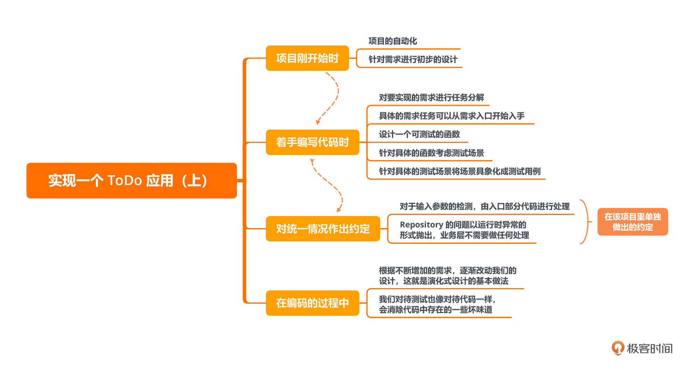

- 00 开篇词 为什么写测试是程序员的本职工作？.md.html
- 01 实战：实现一个 ToDo 的应用（上）.md.html
- 02 实战：实现一个 ToDo 的应用（下）.md.html
- 03 程序员的测试与测试人员的测试有什么不同？.md.html
- 04 自动化测试：为什么程序员做测试其实是有优势的？.md.html
- 05 一个好的自动化测试长什么样？.md.html
- 06 测试不好做，为什么会和设计有关系？.md.html
- 07 Mock 框架：怎么让测试变得可控？.md.html
- 08 单元测试应该怎么写？.md.html
- 09 测试覆盖率：如何找出没有测试到的代码？.md.html
- 10 为什么 100% 的测试覆盖率是可以做到的？.md.html
- 11 集成测试：单元测试可以解决所有问题吗？.md.html
- 12 实战：将 ToDo 应用扩展为一个 REST 服务.md.html
- 13 在 Spring 项目中如何进行单元测试？.md.html
- 14 在 Spring 项目如何进行集成测试？.md.html
- 15 测试应该怎么配比？.md.html
- 16 怎么在遗留系统上写测试？.md.html
- 17 TDD 就是先写测试后写代码吗？.md.html
- 18 BDD 是什么东西？.md.html
- 答疑解惑 那些东西怎么测？.md.html
- 结束语 对代码的信心要从测试里来.md.html
- 捐赠
01 实战：实现一个 ToDo 的应用（上）
你好，我是郑晔。
这一讲是我们整个专栏的第一节课。我在开篇词里说过，很多程序员之所以不写测试，一个重要的原因是不会写测试。所以，我们不玩虚的，第一节课直接带你上手实战。
我们要实现的是一个 ToDo 的应用，选择一个新项目开始，我们没有历史负担，对于学习如何写测试来说，是最容易的。整个实战分为了上下两节课，在这节课里，我们先来实现业务的核心部分，下一节课，我们把完整的应用实现出来。
这个 ToDo 应用本身非常简单，实现功能并不是我们这两节课的重点。一方面，你会看到如何解决问题的过程，比如，如何分解任务、如何设计测试场景、如何把测试场景转换为一个测试用例等等；另一方面，你也会看到，我是如何运用这些解决问题的过程一点点把问题解决掉，在整个开发的过程中如何写测试、写代码。
当你在实际工作中面对更复杂的问题时，这里面的代码对你的帮助可能不大，但这些解决问题的思路却会在工作中实际帮助到你。如果你订阅过我的前几个专栏，这算是一个完整的实战练习。
项目前的准备
在正式开始之前，我们一块来看下这个 ToDo 应用都有哪些具体需求（注：接下来的代码我会用Java来写，如果你没有购买过我的其他课程也没有关系，极客时间有免费试读额度，欢迎你点击文章里的超链接进行学习）。
- 添加 Todo 项。
todo add <item>
1. <item>
Item <itemIndex> added
- 完成 Todo 项。
todo done <itemIndex>
Item <itemIndex> done.
- 查看 Todo 列表，缺省情况下，只列出未完成的 Todo 项。
todo list 1. <item1> 2. <item2>
Total: 2 items
- 使用 all 参数，查看所有的 Todo 项。
todo list --all
1. <item1>
2. <item2>
3. [Done] <item3>
Total: 3 items, 1 item done
如果你订阅过我的《代码之丑》，你会发现，它就是我在《代码之丑》中给你布置的课堂练习作业的第一部分。如果你想对今天的内容有更深刻的理解，不妨先停下来，自己实现一遍这个需求，然后，再回过头看我是怎样解决这个问题的，对比一下实现方式的差异，记得要写测试哦！
为了厘清主线，不受细节的干扰，我在正文中只罗列了最关键的部分代码。如果你想看完整的代码，我在 GitHub 上为此专门建了一个项目，你可以去参考。
具体的需求有了，我们接下来怎么动手实现这个应用呢？我们先来做一些基础的准备工作：
- 一个项目自动化；
- 对需求进行简单的设计。
为什么要先从这些东西做起呢？我在《10x 程序员工作法》中曾经介绍过迭代 0 的概念，这是一个项目开始的基础准备，当然，因为我们这个是一个练习项目，所以，准备的内容相对来说，还比较少。
为什么要准备项目自动化呢？简单来说，就是防止自己犯一些低级错误。关于这个项目自动化中包含了哪些内容，我在《10x 程序员工作法》中也专门用了一讲的篇幅介绍，你如果有兴趣不妨去了解一下。
接下来，我们就要进行一些简单的设计了。
设计先行
虽说这个部分的要求是一个命令行的应用，但我们要知道，一个系统的业务核心与它呈现的方式并不是耦合在一起的。也就是说，命令行只是这个 ToDo 应用的一种呈现形式。在专栏后面你会看到，我们也可以把它改造成一个 REST 服务。
所以，我们首先要做一个设计，把核心的业务部分和命令行呈现的部分分开。在我们的工程中，它们分别被放到了两个模块里，一个是 todo-core，用来放置核心的业务部分；一个是 todo-cli，用来放置命令行相关的处理。这一讲，我们主要先来解决核心的业务部分，至于命令行相关的处理，那会是我们下一讲的主题。
我们先来处理核心的业务部分。这里的核心业务是什么呢？根据前面的需求，就只有三个操作：
- 添加一个 Todo 项；
- 完成一个 Todo 项；
- Todo 项列表。
接下来，我们可以用 DDD 战术设计的方法进行一下识别各个概念（如果你不了解战术设计的基本过程，可以去看看《软件设计之美》中的关于战术设计的过程）。
首先是名词，这里我们的核心对象只有一个，就是 Todo 项。Todo 项的核心字段就是它的内容，也就是我们在命令行里写下的内容。
有了名词，我们就要识别动作了。我们先来看领域服务，这里我们可以有一个 Todo 项服务，对应着我们的操作，它应该包含三个方法：
- addTodoItem，添加 Todo 项；
- markTodoItemDone，完成一个 Todo 项；
- list，列出所有的 Todo 项。
我们应用的需求比较简单，核心对象只有 Todo 项一个，也就不牵扯到多个对象的协同，所以我们这里就暂时不涉及到应用服务的设计。
服务只是操作，最终还要有一个地方把操作的结果存起来，在 DDD 中，这是 Repository 扮演的角色。所以，我们这里还需要一个 Todo 项的 Repository 用来处理与持久化相关的接口。
很多人一看到 Repository 这个概念，首先想到的是数据库，但正如你所见，这里并没有出现数据库。所以 Repository 并不是与数据库绑定在一起的，它只表示一种持久化的机制。在我们的这个版本实现里，这个 Repository 将会是一个文件的版本。
现在基本的设计有了，我们就要准备开始实现这个设计了。
任务分解
要从哪里开始实现呢？我们要从离我们需求最近的入口开始。通常来说，这个起点是应用服务，但是我们这里暂时没有应用服务，所以，我们可以从领域服务开始。
我们就按照需求的先后顺序，依次实现每个服务，首先是添加 Todo 项。
如果按照很多人通常的习惯，添加 Todo 项，就是创建一个 Todo 项，然后存在 Repository 里面。但这对我们的测试课来说是不够的，我们还得考虑一下这个行为要怎么测试。
要想测试一个函数，一个函数最好是可测的。什么是可测的？就是通过函数的接口设计，我们给出特定的输入，它能给我们相应的输出。所以，一个函数最好是有返回值的。我们可以这样来设计添加 Todo 项的函数接口。
TodoItem addTodoItem(final TodoParameter todoParameter);
在这个函数签名中，TodoItem 表示一个 Todo 项，而 TodoParameter 表示创建一个 Todo 项所需的参数（很多人可能会选择字符串作为入口参数，我曾经在《代码之丑》中讲过，使用一个更有业务含义的名字，比直接使用基本类型会更清楚）。
有了这个函数签名，我知道你已经迫不及待地要开始写测试了。但请稍等一下，我们要先来考虑一下测试场景，因为很多人写代码只会考虑到正常的场景，趁着我们还没开始写代码，最好把能想到的各种场景都考虑一下。
首先想到的是添加一个正常的字符串，这是我们的正常情况，没有问题。但是，如果添加的字符串是一个空的，我们该怎么处理呢？
一般而言，处理空字符串的方式有两种。一种是返回一个空的 TodoItem，一种是抛出一个异常。到底使用哪种做法，我们要考虑一下二者语义的差别。返回一个空的 TodoItem，表示这是一个可以接受的场景。而抛出一个异常，表示这不是一个正常的场景，它是一个“异常”。
就我们这里的场景而言，我们要从业务思考一下，确实有人可能在调用我们的命令时给出的参数是空，但考虑到 Fail Fast 原则，这种错误属于入口参数错误，应该在入口检测出来，不应该传到业务核心里面。
所以，我们可以将空传给业务核心部分视为“异常”。同时，我们也确立好了一条设计规范：对于输入参数的检测，由入口部分代码进行处理。
基于这条设计规范的考虑，如果是一个空的字符串，那么根本就不应该传到我们的领域服务中，应该直接在入口参数检测中就应该消灭掉。换言之，TodoParameter 就不会出现空字符串。所以空字符串这个事，我们就暂且不考虑了。
不过，这倒给我们提了一个醒，如果是 TodoParameter 为空呢？这种情况也不应该出现，所以我们可以把它当做异常来处理。
现在，我们这里就有了两个测试场景：
- 添加正常的参数对象，返回一个创建好的 Todo 项；
- 添加空的参数对象，抛出异常。
也许你还会想到几个场景，比如如果字符串重复了怎么办？答案是从目前的业务要求来说，字符串重复是可以接受的，只是添加了一个新的 Todo 项。所以，不需要为它做什么特殊的处理。
再有，如果存储到 Repository 的过程中出现了问题，比如磁盘满了，这样的问题属于不可恢复的异常，我们在业务处理中也做不了什么特殊的处理，只能把它抛出去。
一般来说，这种异常可以由 Repository 直接抛出一个 Runtime 异常，我们在业务处理不需要做什么。所以我们这里可以确立另外一条设计规范：Repository 的问题以运行时异常的形式抛出，业务层不需要做任何处理。
好，我们现在已经考虑了最主要的场景，下面就到了动手写代码环节了。
编写测试
我们从第一个测试场景开始，这个场景关注的是正常的参数对象。我们首先要做的是，把测试场景具象化成一个测试用例。
把测试场景具象成一个测试用例，也就是要把测试场景中空泛的描述变成一个个具体的参数。比如，添加正常的字符串。什么叫一个正常的字符串呢？在我们这个案例里面，它是相对于空字符串而言的，所以，我们这里需要给出一个非空的字符串。
如果有业务人员给我们一个具体的例子那是最好，如果没有，我会使用一些在测试中常用的词汇，比如：foo、bar 之类的。
到这里，我们就很容易写出一个测试的基本结构。
@Test
public void should_add_todo_item() {
TodoItemRepository repository = ...
TodoItemService service = new TodoItemService(repository);
TodoItem item = service.addTodoItem(new TodoParameter("foo"));
assertThat(item.getContent()).isEqualTo("foo");
}
你会发现这还是一段未完成的代码，原因就在于，我们还没有对 repository 这个变量进行处理。我们现在处理的重点是在领域服务上，而 TodoItemRepository 到底要怎么实现，我们还没有考虑。
我们现在对于 TodoItemRepository 的述求是它只要有一个 save 接口就好，至于它是数据库还是文件，根本不是我们现在关心的重点。
只有一个接口，我们该怎么用它呢？我们可以用 Mock 框架模拟出一个有这样行为的对象。Mock 框架就是根据预期的参数，给出相应的结果，这个结果可能是返回值，也可能是抛出异常。关于 Mock 框架更多的介绍，我们会在后面的部分专门讲解。
下面是增加了 repository 初始化的代码。
@Test
public void should_add_todo_item() {
TodoItemRepository repository = mock(TodoItemRepository.class);
when(repository.save(any())).then(returnsFirstArg());
TodoItemService service = new TodoItemService(repository);
TodoItem item = service.addTodoItem(new TodoParameter("foo"));
assertThat(item.getContent()).isEqualTo("foo");
}
这里我们用到的 Mock 框架是 Mockito，这里面有一句代码你或许会有点陌生。
when(repository.save(any())).then(returnsFirstArg());
这句代码表示当我用任意参数调用这个 repository 对象的 save 方法时，我预期它返回第一个参数作为返回值。对应到我们这里的语义，就是存进去什么对象，就返回什么对象。
另外，这里面用到的断言程序库是 AssertJ，它的 API 是流畅风格的 API（Fluent API），也就是连着的点点点。
有了这个测试，实现相应的代码就很容易了，相信你也很容易做到。
public TodoItem addTodoItem(final TodoParameter todoParameter) {
final TodoItem item = new TodoItem(todoParameter.getContent());
return this.repository.save(item);
}
这里最核心的 TodoItem 目前只包括一个内容的字段。
@Getter
public class TodoItem {
private final String content;
public TodoItem(final String content) {
this.content = content;
}
}
接下来，我们再来实现下一个测试。有了第一个测试的基础，第二个测试的关注点是空对象，你也应该能够很容易得写出来。
@Test
public void should_throw_exception_for_null_todo_item() {
assertThatExceptionOfType(IllegalArgumentException.class)
.isThrownBy(() -> service.addTodoItem(null));
}
根据第二个测试，我们的 addTodoItem 方法就需要增加一条对于空对象的处理。
public TodoItem addTodoItem(final TodoParameter todoParameter) {
if (todoParameter == null) {
throw new IllegalArgumentException("Null or empty content is not allowed");
}
final TodoItem item = new TodoItem(todoParameter.getContent());
return this.repository.save(item);
}
至此，添加 Todo 项的任务也算完成，我们可以运行一下命令做一下检查，看看我们是否有遗漏。
./gradlew check
这里的遗漏可能是由于编码风格，也可能是由于代码覆盖率导致，这也是我们为什么要把项目自动化放在最前面完成的原因。后面每完成一个任务，也应该运行一下这个命令，同样的事情，后面我就不再重复了。
到这里，关于如何添加测试编写代码的最基本思路，我们已经讲清楚了。接下来，我们来完成一个 Todo 项。完成 Todo 项的接口是这样的。
TodoItem markTodoItemDone(TodoIndexParameter index);
这里的入口参数是一个索引，只不过这里做了一次封装，封装出一个 TodoIndexParameter。
针对这个接口，我们考虑的测试场景包括：
- 对于一个已经存在的 Todo 项，将其标记已完成；
- 如果索引超出现有的索引范围，则返回空。
对于一个索引，你可能也会想到索引为负的场景。但同之前一样，这个问题应该是属于在入口就检验出来的问题，所以我们封装一个 TodoIndexParameter，这样在业务层就不需要考虑索引为负的场景了。
对于最后一个场景，当索引超出索引范围，返回空。鉴于空指针总是一个容易引起问题的场景，所以，我们这里采用 Optional 替代直接返回对象（关于 Optional 使用的基本思路，我在《软件设计之美》中讲过，如果你感兴趣可以去回顾一下）。
Optional<TodoItem> markTodoItemDone(TodoIndexParameter index);
我们先来编写这个接口的第一个测试。
@BeforeEach
public void setUp() {
this.repository = mock(TodoItemRepository.class);
this.service = new TodoItemService(this.repository);
}
@Test
public void should_mark_todo_item_as_done() {
when(repository.findAll()).thenReturn(ImmutableList.of(new TodoItem("foo")));
when(repository.save(any())).then(returnsFirstArg());
final Optional<TodoItem> todoItem = service.markTodoItemDone(TodoIndexParameter.of(1));
assertThat(todoItem).isPresent();
final TodoItem actual = todoItem.get();
assertThat(actual.isDone()).isTrue();
}
因为 service 的初始化和 repository 这个模拟对象的初始化几乎所有正常路径都要用到，所以，我们把它挪到 setUp 方法中，以便每个测试之前都能够运行它。
这个版本的实现采用了最为粗暴的方案，把所有的 Todo 项都加载到内存中，然后根据索引进行筛选。所以，这里我们用到了 findAll 方法。
这个实现不难，重要的变化是 TodoItem 需要有一个字段标记它的完成，代码如下。
@Getter
public class TodoItem {
private final String content;
private boolean done;
public TodoItem(final String content) {
this.content = content;
this.done = false;
}
public void markDone() {
this.done = true;
}
}
后面两个测试场景以及相应的实现代码，你可以参考开源项目中的代码，这里就不一一罗列了。
最后是 Todo 项列表，它的接口相对比较简单。
List<TodoItem> list(final boolean all);
其中，all 参数为 true 时，列出所有的 Todo 项；false 的时候，列出未完成的 Todo 项。
在需求中，缺省情况罗列的是未完成的 Todo 项，这是过滤掉已完成的 Todo 项的结果。但是，如果我们简单的采用按照列表的顺序作为索引，这就产生一个问题，每当有一个 Todo 项完成之后，剩余 Todo 项的列表顺序就会发生改变，这其实是不合适的。所以，我们最好把索引放到 Todo 项的实体中。
@Getter
public class TodoItem {
private long index;
private final String content;
private boolean done;
public TodoItem(final String content) {
this.content = content;
this.done = false;
}
public void assignIndex(final long index) {
this.index = index;
}
public void markDone() {
this.done = true;
}
}
这里我们把索引的赋值可以在服务中完成，也可以在 Repository 保存的过程中完成。从目前的情况看，这个索引的值与 Repository 现有的 Todo 项个数紧密相关，所以，我们可以把它放在 保存到 Repository 的过程中完成。也就是说，保存一个 Todo 项时，如果这个 Todo 项没有索引，就为它赋一个索引，如果有索引，就更新相应的 Todo 项。
针对这个接口，我们考虑的测试场景包括：
- 如果有 Todo 项，罗列 Todo 项时，列出所有的 Todo 项；
- 如果没有 Todo 项，罗列 Todo 项时，列出 Todo 项为空；
- 如果有未完成的 Todo 项，罗列未完成 Todo 项，列出所有未完成的 Todo 项；
- 如果没有未完成的 Todo 项，罗列未完成 Todo 项，列出的 Todo 项为空。
具体的代码也不在这里罗列了，你可以参考开源项目中的代码。
有时你会发现，虽然我们列出了很多测试场景，但当我们有了一些基础的代码之后，一些测试刚写完就通过了。比如，如果我们先写了罗列 Todo 项和罗列未完成 Todo 项的代码，后面两个测试场景很可能自然地就通过了。
这种情况在写测试的时候是很常见的，这说明，我们前面的代码已经很好地处理了这些情况。这并不说明这些测试场景是无用的，因为不同的实现方式并不能保证这些测试都是通过的，所以，既然我们已经为它们写了测试，保留在那里就好了。
到这里，我们已经把最核心的业务代码写完了，当然，它还不能完整地运行，因为它没有命令行的输入，也没有实现 Repository 的存储。但有了一个稳定的核心，这些东西都好办。下一讲，我们就来把这些东西都连接起来。
总结时刻
在这一讲里，我们实现 ToDo 应用的核心业务部分，这里面的重点并不是把代码写出来，我相信你有能力去编写完成这段代码。我在这里的描述更多的是在一个项目启动的初期要关注哪些内容，以及如何去着手去编写测试。
项目刚开始时，我们要准备哪些内容：
- 项目的自动化；
- 针对需求进行初步的设计。
着手编写代码时，我们要怎么做呢？
- 对要实现的需求进行任务分解；
- 在一个具体的需求任务中，我们可以从需求入口开始入手；
- 设计一个可测试的函数；
- 针对具体的函数，考虑测试场景；
- 针对具体的测试场景，将场景具象化成测试用例。
在梳理的过程中，我们还会针对一些统一的情况作出一些约定，成为项目整体的设计规范，比如，在这里我们约定：
- 对于输入参数的检测，由入口部分代码进行处理；
- Repository 的问题以运行时异常的形式抛出，业务层不需要做任何处理。
在编码的过程中，我们也看到了：
- 根据不断增加的需求，逐渐改动我们的设计，这就是演化式设计的基本做法；
- 我们对待测试也像对待代码一样，会消除代码中存在的一些坏味道。
如果今天的内容你只能记住一句话，那么请记住，细化测试场景，编写可测试的代码。

思考题
今天我分享了从一个需求入手，如何一步一步地写出测试。你在实际工作中是怎么做测试呢？如果你如果不做的话，原因又是什么呢？欢迎在留言区分享你的所见所闻。
参考资料
© 2019 - 2023 Liangliang Lee. Powered by gin and hexo-theme-book.